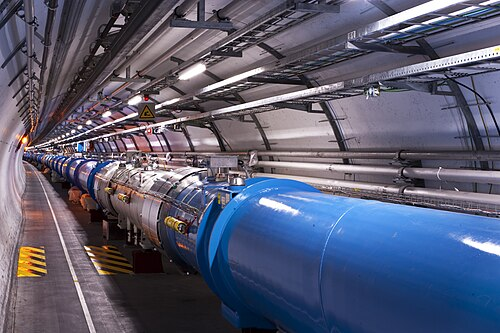
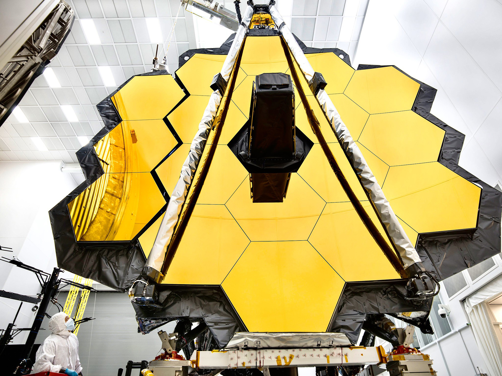

1. Articulación y unificación teórica
La ciencia suele presentarse en la educación escolar en cajas estancadas: Física, Química, Biología. Sin embargo, los grandes saltos en la comprensión de la naturaleza ocurrieron exactamente cuando distintos problemas encontraron puentes y lograron teorías unificadas o articuladas. La historia del progreso en las ciencias fuertes es una historia de integración de leyes que antaño parecían describir fenómenos totalmente disímiles y sin conexión.
En el siglo XVIII existían leyes separadas para cómo se atraían los metales (magnetismo) y cómo interactuaba la carga frotada en un pedazo de ámbar (electricidad). Fueron Michael Faraday y James Clerk Maxwell quienes construyeron la unificación hacia el Electromagnetismo en la segunda mitad del siglo XIX, al demostrar que la corriente generaba magnetismo y el magnetismo en movimiento generaba corriente, sintetizándolo en grandes ecuaciones combinadas. Al unificar esto, revelaron una sorpresa aún más masiva: la luz misma era una onda electromagnética.
No podemos separar áreas tajantemente: la biología molecular nace articulada con la química, que a su vez requiere de la física atómica para su explicación fundamental. Por tanto, las revoluciones científicas a veces provienen, no de desechar una teoría para abrazar otra completamente nueva sobre el mismo fenómeno, sino de ensamblar teorías superpuestas hasta crear marcos globales de explicación general de alta capacidad teórica, reducciones de nivel y cruces de campo continuo.
Maxwell y la gran síntesis clásica
El ejemplo canónico de unificación teórica moderna es obra de James Clerk Maxwell (Edimburgo, 1831 — Cambridge, 1879). Matemático prodigio, Maxwell recogió décadas de trabajo experimental de su predecesor Michael Faraday —autodidacta de origen humilde que descubrió la inducción electromagnética en el Royal Institution de Londres en 1831— y los formalizó en cuatro ecuaciones publicadas en 1865. Sus ecuaciones demostraron que electricidad, magnetismo y luz eran tres manifestaciones de un único campo. Su predicción de la existencia de ondas electromagnéticas de distintas frecuencias fue confirmada por Heinrich Hertz en 1887, ocho años después de la muerte de Maxwell. Esas ondas son hoy la radio, la televisión, el wifi y toda comunicación inalámbrica. Einstein dijo de él que fue el trabajo más profundo en física desde Newton.
Un siglo después de Maxwell, Sheldon Glashow y Steven Weinberg (ex compañeros de escuela secundaria en el Bronx, Nueva York) y Abdus Salam (Jhang, Pakistán — primer científico pakistaní en ganar el Nobel, trabajando en el Imperial College de Londres) unificaron la fuerza electromagnética con la fuerza nuclear débil —responsable del decaimiento radioactivo— en una sola descripción matemática. Sus trabajos independientes convergieron en la misma teoría, compartiéndoles el Nobel de Física de 1979. El Modelo Estándar de la física de partículas suma además la fuerza nuclear fuerte. La única no integrada aún: la gravedad. La llamada "Teoría de Todo" sigue siendo la gran frontera abierta del siglo XXI.
2. Descubrimientos al azar (Serendipia)
Solemos imaginar al Método Científico como un robot impecable: un paso detrás del otro hasta llegar a la verdad, movilizado por hipótesis precisas dirigidas específicamente a resolver un único y claro problema. Pero la realidad práctica es mucho más rica y caótica. Un porcentaje asombrosamente alto de los hallazgos más transformadores de la civilización provino por completa suerte, accidente o "serendipia" (el hallazgo afortunado mientras se buscaba otra cosa).
"En el campo de la observación, el azar solo favorece a la mente preparada."
— Louis PasteurPenicilina (Fleming, 1928)
Alexander Fleming trabajaba con bacterias. Se fue de vacaciones dejando una placa de Petri expuesta, la cual, por puro accidente, fue contaminada por un hongo del aire. En lugar de tirarla, descubrió que alrededor del hongo no crecían bacterias. Hallelujah. El primer antibiótico había aparecido.
Rayos X (Roentgen, 1895)
Wilhelm Röntgen estaba experimentando sin un fin exacto con los caprichosos "rayos catódicos" cuando notó que una pantalla a metros de distancia resplandecía místicamente. Pronto, y tras interponer la mano de su esposa, el esqueleto quedó proyectado misteriosamente.
Radiación de Microondas (1964)
Penzias y Wilson solo querían calibrar una antena de radio enorme con un ruido de estática persistente y molesto sin saber su razón. Pasaron meses limpiando excremento de palomas sin éxito, hasta que notaron que era ¡el eco del mismísimo Big Bang que inundaba su equipo!
Radiactividad (Becquerel, 1896)
Henri Becquerel investigaba en París la fluorescencia de sales de uranio con luz solar. Un día nublado, guardó las muestras sobre una placa fotográfica envuelta en papel negro. Al revelarla días después —sin haberla expuesto al sol—, encontró una imagen igual de nítida: el uranio emitía radiación por sí mismo, sin necesidad de ninguna fuente de energía externa. Marie Curie, que estudiaría este fenómeno en profundidad junto a Pierre, acuñó el término "radiactividad" en 1898 y ganó dos Premios Nobel por explicar lo que Becquerel encontró por accidente.
Vulcanización del caucho (Goodyear, 1839)
Charles Goodyear llevaba años obsesionado con estabilizar el caucho natural, que se derretía en verano y se quebraba en invierno, arruinándolo para cualquier uso práctico. La solución llegó cuando derramó accidentalmente una mezcla de caucho y azufre sobre la estufa caliente de su cocina en Woburn, Massachusetts. El material resultante era elástico, resistente y estable a temperaturas extremas. Goodyear patentó el proceso en 1844 y transformó para siempre la industria del transporte —aunque nunca llegó a ser rico: murió en 1860 con deudas de 200.000 dólares.
La filosofía formal intenta imponer normas a lo que deberíamos hacer luego de observar o cómo verificar un enunciado, pero los destellos de genialidad empíricos en los laboratorios reales muestran que la creatividad, lo fortuito y una "mente abierta" no institucionalizada rígidamente es fundamental para el progreso.
3. La Gran Ciencia y la Inutilidad Práctica
Con el correr del siglo XX y XXI, la articulación teórica de la que hablábamos se transformó en problemas de escalas inimaginables. Ya no hablábamos del laboratorio suelto de Fleming. El avance hacia las fronteras abstractas del descubrimiento atómico y galáctico exigió delinear proyectos masivos: aceleradores de partículas de miles de millones de euros cruzando países (como el LHC en el CERN) o telescopios de proporciones industriales disparados al espacio profundo (James Webb). Así comienza la era de Big Science.

"¿Para qué necesitamos destinar 10 billones de dólares en descubrir si el Bosón de Higgs existe o no, o cómo era el universo primitivo en sus milisegundos de formación? Eso no cura el cáncer ni elimina el hambre, ni frena la pobreza ni provee electricidad más barata en las redes urbanas. Es un lujo académico abstracto inútil."
La cosmología teórica y la física de partículas pura parecen totalmente alejadas del progreso general pragmático que requiere el humano de a pie, casi como entes platónicos intocables. Así nos topamos con un debate ético y epistémico mayúsculo sobre qué tipos de teorías deben o merecen ser financiables, si solo la "ciencia aplicada" merecería crédito estatal o si investigar al puro saber mismo es el propósito del desarrollo de una nación tecnológica.

Vannevar Bush (Everett, Massachusetts, 1890–Belmont, 1974) era director de la Oficina de Investigación y Desarrollo Científico de los EE.UU. cuando el presidente Roosevelt le pidió, en 1944, que elaborara un plan para la posguerra. Su informe, Science: The Endless Frontier (1945), es el documento fundacional de la política científica moderna. Bush argumentó que el Estado debía financiar masivamente la investigación básica —sin exigir aplicaciones inmediatas— porque a largo plazo genera el conocimiento que luego nutre la tecnología aplicada, la medicina y la defensa nacional. La metáfora era territorial: la frontera científica era inagotable, y explorar sin destino práctico fijo era precisamente la condición del avance futuro. Este informe creó la National Science Foundation (NSF) en 1950 y definió el modelo de financiamiento estatal de la investigación que siguieron Europa y el resto del mundo. La tesis de fondo es la misma que encontramos en el "espejo de Copérnico": la inutilidad práctica inmediata de la investigación básica es exactamente lo que garantiza su utilidad transformadora a largo plazo.
El Telescopio Espacial James Webb (JWST) es uno de los mayores estandartes contemporáneos de esta misma cruzada científica. Con un costo que excedió los 10.000 millones de dólares y décadas de desarrollo coordinado entre miles de científicos, ingenieros y múltiples agencias espaciales internacionales, su propósito principal inicial no es mejorar la industria manufacturera o farmacéutica terrestre. Su revolucionaria estructura espejada y su capacidad de ver en el infrarrojo tienen un objetivo mucho más lejano y fundamental: mirar hacia atrás en el tiempo para capturar la tenue luz estirada de las primeras galaxias formadas tras el Big Bang, y analizar simultáneamente atmósferas de exoplanetas lejanos buscando biomarcadores. Como el LHC, el James Webb empuja el límite absoluto de nuestra ingeniería humana para un fin casi exclusivamente epistémico: expandir el mapa del conocimiento sobre nuestra propia existencia y nuestro lugar en el cosmos.
4. El espejo de Copérnico
Para comprender esta "aparente inutilidad", es importante dar una mirada hacia el espejo retrovisor a toda nuestra unidad número uno. Pensemos en el contexto histórico en el siglo XVI con Nicolás Copérnico proponiendo el paradigma Heliocéntrico.
Para un carpintero, orfebre o sastre europeo promedio en pleno 1543, ¿qué utilidad "práctica" tenía que la Tierra girara en lugar del Sol? La respuesta inmediata y simple era: Estrictamente ninguna. Su recolección en los campos, su cosecha temporal climática y sus intercambios mercantiles seguían basándose en lo sensorial y mundano tradicional.
Pese a su nula utilidad material y pragmática inicial, la propuesta copernicana forzó la reformulación completa posterior por la "articulación con la física": no se podía justificar un cielo que daba vueltas a la Tierra en el vacío si esta no nos llevaba por los aires con enorme fuerza. Consecuentemente Galileo tuvo que revisar la teoría de la inercia, y pronto Newton debió inventar matemática monumental para darle sentido universal. De esa "abstracta queja sin importancia pragmática" para sus coetáneos terminó destilando toda la mecánica clásica de la Revolución industrial y la física del mundo actual en una reacción en cadena epistémica incalculable.
El progreso científico jamás viaja en líneas de retorno previsibles a su sociedad y nunca debe pensarse desde la visión miope utilitarista de cinco a diez años en el futuro. Quienes desarrollaron los satélites "aparentemente abstractos empujando la nueva frontera bélica-cosmológica" para explorar órbitas terminaron indirectamente armando la ingeniería del GPS en cada celular del planeta. Así que el estudio sobre la cosmología y las partículas subatómicas de la Big Science del siglo XXI es nuestra propia "Revolución Copernicana actual". Su aparente inutilidad transitoria de hoy es la siembra oculta de las revoluciones e increíbles unificaciones y articulaciones del mañana.